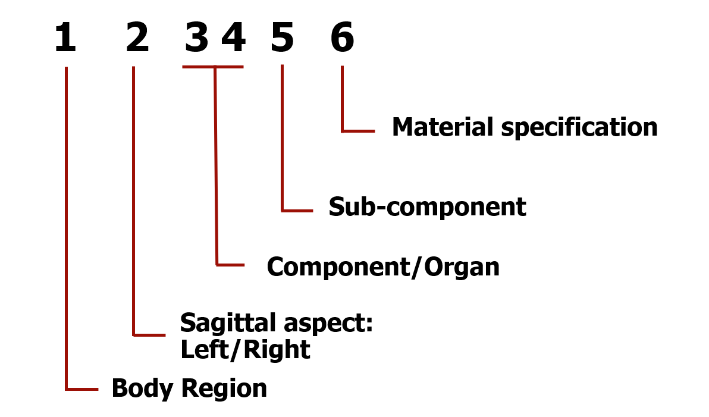

Model Data Structure
The goal is to structure all the model data in such a way that it is enables collaborative development of the model, which is one of the motivations of having an open model. One of the requirements for this is persistent (does not change over time) and unique (no mismatches or clashes) structuring of model data. A brief overview of identifier numbering scheme for the model parts and include file structuring of the model data is given below.
The detailed body region-wise identifier list can be found at the following locations.
Identifiers
The primary identifier for any model data (part, section, material definition, curves) is a six-digit number that locates the anatomical entity that the data pertains to. Moving from left to right of the identifier locates the component with increasing specificity. The hierarchy in the idenfier follows the order: Body region, sagittal aspect (left/right), component/organ within the body region, sub-components (to be used if detailed geometric and material definitions are required for a component).

Body regions
| Identifier | Body Region |
|---|---|
| 1 | Head |
| 2 | Neck |
| 3 | Upper Extremities |
| 4 | Thorax |
| 5 | Abdomen |
| 6 | Pelvis |
| 7 | Lower Extremities |
Sagittal Aspect (Left/Right side of the body)
The position of the anatomical entity with respect to the mid-sagittal plane, i.e. left or right side of body, is described by the second digit of the identifier.
| Sagittal Aspect | Sagittal Aspect |
|---|---|
| X 0 XXX X | Left |
| X 5 XXX X | Right |
The left and right extremities follow the same numbering scheme, rather than separate body region identifier. Hence, symmetric components will have identifiers that are offset by 50,000.
Components located on the mid-sagittal plane will have a default value of 0, unless further sub-division is required for the sake of post-processing. For instance, separate output for responses of right and left halves of the intervertebral disc or spinal ligaments may of be interest in side/oblique impact, in which case, the components can be defined as different parts using this numbering system.
Node numbering will also follow the same number scheme as the body region and sagittal aspect.
Component/Organ
The third and fourth digits of the identifier is used to describe components/organs in respective body regions. The fifth digit is used to identify a sub-component of the anatomical entity, for e.g., cortical and trabecular bone. This allows for a sub-components to represented within component under a common identifier.
The component identifier for a body region is numbered in increasing order from superior to inferior direction. If multiple components are present at the same level, the components are numbered from the medial to lateral direction in the supine position and anterior to posterior. An example of the left upper extremity skeletal system is given below.
| Component Identifier | Description |
|---|---|
| 60 010 0 | Clavicle |
| 60 020 0 | Scapula |
| 60 030 0 | Humerus |
| 60 040 0 | Ulna |
| 60 050 0 | Radius |
| 60 060 0 – 60 130 0 | Carpal Bones |
| 60 140 0 – 60 180 0 | Metacarpal Bones |
| 60 190 0 – 65 320 0 | Phalanges |
Include file structure